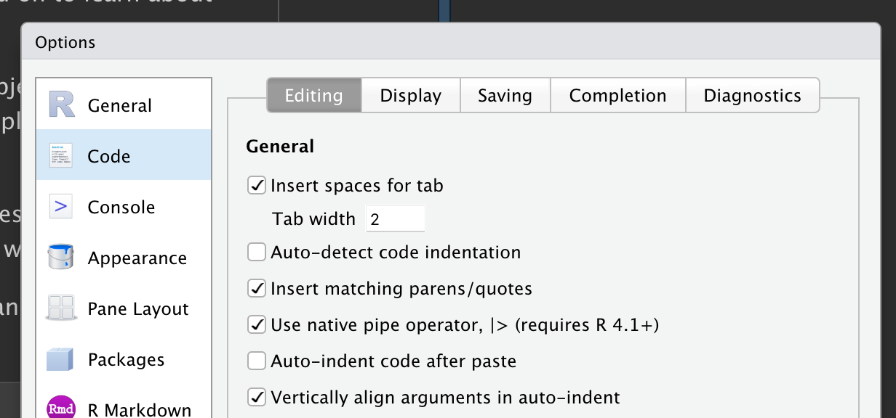
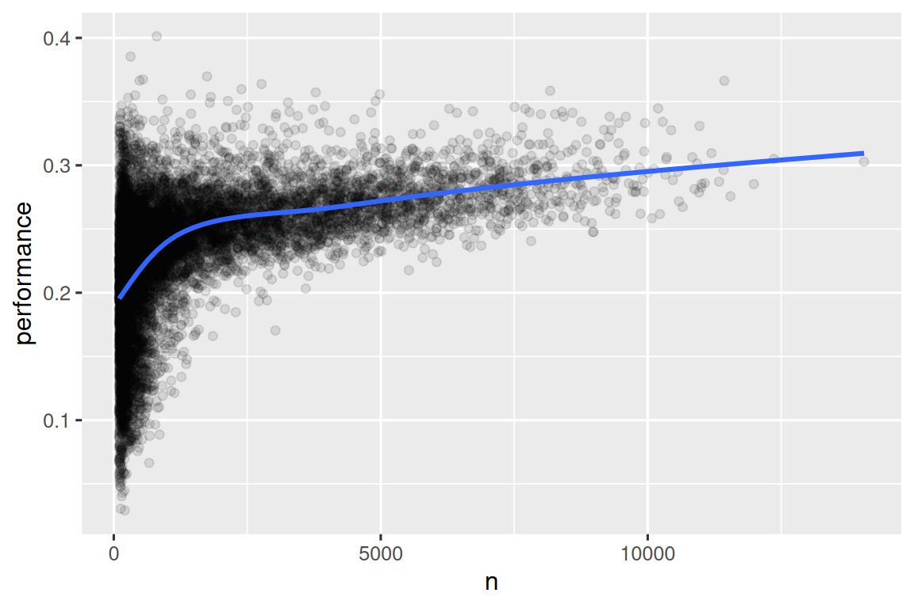

library(nycflights13)
library(tidyverse)
#> ── Attaching core tidyverse packages ───────────────────── tidyverse 2.0.0 ──
#> ✔ dplyr 1.2.1.9000 ✔ readr 2.2.0
#> ✔ forcats 1.0.1 ✔ stringr 1.6.0
#> ✔ ggplot2 4.0.3 ✔ tibble 3.3.1
#> ✔ lubridate 1.9.5 ✔ tidyr 1.3.2
#> ✔ purrr 1.2.2
#> ── Conflicts ─────────────────────────────────────── tidyverse_conflicts() ──
#> ✖ dplyr::filter() masks stats::filter()
#> ✖ dplyr::lag() masks stats::lag()
#> ℹ Use the conflicted package (<http://conflicted.r-lib.org/>) to force all conflicts to become errors3 Transformation de données
3.1 Introduction
La visualisation est un outil important pour acquérir de la connaissance, mais il est rare que les données soient exactement sous la bonne forme pour créer le graphique souhaité. Vous devrez souvent créer de nouvelles variables ou des statistiques pour répondre à vos questions avec vos données, vous voudrez peut-être simplement renommer les variables ou réorganiser les observations pour rendre les données un peu plus faciles à manipuler. Vous apprendrez à faire tout cela (et bien plus !) dans ce chapitre, qui vous présentera la transformation de données à l’aide du package dplyr et un nouveau jeu de données sur les vols qui ont décollé de New York City en 2013.
L’objectif de ce chapitre est de vous donner un aperçu de tous les outils clés pour transformer un data frame. Nous commencerons par les fonctions qui opèrent sur les lignes, puis sur les colonnes d’un data frame, puis reviendrons à la discussion du pipe, un outil important que vous utiliserez pour combiner les verbes. Nous introduirons ensuite la capacité à travailler avec des groupes. Nous terminerons le chapitre par une étude de cas qui met ces fonctions en action. Dans les chapitres suivants, nous reviendrons sur ces fonctions plus en détail en commençant à explorer des types de données spécifiques (par exemple, les nombres, les chaînes de caractères, les dates).
3.1.1 Conditions préalables
Dans ce chapitre, nous nous concentrerons sur le package dplyr, un autre membre central du tidyverse. Nous illustrerons les idées clés à l’aide de données du package nycflights13 et utiliserons ggplot2 pour nous aider à comprendre les données.
Notez attentivement le message de conflits imprimé lorsque vous chargez le tidyverse. Il vous dit que dplyr réécrit certaines fonctions dans R base. Si vous voulez utiliser la version base de ces fonctions après avoir chargé dplyr, vous devrez utiliser leurs noms complets : stats::filter() et stats::lag(). Jusqu’à présent, nous avons en grande partie ignoré d’où provient une fonction car cela n’a généralement pas d’importance. Cependant, connaître le package peut vous aider à trouver de l’aide et à découvrir les fonctions connexes, donc quand nous devons être précis sur le package d’où provient une fonction, nous utiliserons la même syntaxe que R : packagename::functionname().
3.1.2 nycflights13
Pour explorer les verbes dplyr fondamentaux, nous utiliserons nycflights13::flights. Ce jeu de données contient les 336,776 vols qui ont décollé de New York en 2013. Les données proviennent du Bureau américain des statistiques des transports et sont documentées dans ?flights.
flights
#> # A tibble: 336,776 × 19
#> year month day dep_time sched_dep_time dep_delay arr_time sched_arr_time
#> <int> <int> <int> <int> <int> <dbl> <int> <int>
#> 1 2013 1 1 517 515 2 830 819
#> 2 2013 1 1 533 529 4 850 830
#> 3 2013 1 1 542 540 2 923 850
#> 4 2013 1 1 544 545 -1 1004 1022
#> 5 2013 1 1 554 600 -6 812 837
#> 6 2013 1 1 554 558 -4 740 728
#> # ℹ 336,770 more rows
#> # ℹ 11 more variables: arr_delay <dbl>, carrier <chr>, flight <int>, …flights est un tibble, un type spécial de data frame utilisé par le tidyverse pour éviter certains pièges courants. La différence la plus importante entre les tibbles et les data frames est la manière dont les tibbles s’affichent ; ils sont conçus pour les jeux de données volumineux, de sorte qu’ils n’affichent que les premières lignes et uniquement les colonnes qui tiennent sur un écran. Il existe quelques options pour tout voir. Si vous utilisez RStudio, le plus pratique est probablement View(flights), qui ouvre une vue interactive, déroulable et filtrable. Sinon, vous pouvez utiliser print(flights, width = Inf) pour afficher toutes les colonnes, ou utiliser glimpse() :
glimpse(flights)
#> Rows: 336,776
#> Columns: 19
#> $ year <int> 2013, 2013, 2013, 2013, 2013, 2013, 2013, 2013, 2013…
#> $ month <int> 1, 1, 1, 1, 1, 1, 1, 1, 1, 1, 1, 1, 1, 1, 1, 1, 1, 1…
#> $ day <int> 1, 1, 1, 1, 1, 1, 1, 1, 1, 1, 1, 1, 1, 1, 1, 1, 1, 1…
#> $ dep_time <int> 517, 533, 542, 544, 554, 554, 555, 557, 557, 558, 55…
#> $ sched_dep_time <int> 515, 529, 540, 545, 600, 558, 600, 600, 600, 600, 60…
#> $ dep_delay <dbl> 2, 4, 2, -1, -6, -4, -5, -3, -3, -2, -2, -2, -2, -2,…
#> $ arr_time <int> 830, 850, 923, 1004, 812, 740, 913, 709, 838, 753, 8…
#> $ sched_arr_time <int> 819, 830, 850, 1022, 837, 728, 854, 723, 846, 745, 8…
#> $ arr_delay <dbl> 11, 20, 33, -18, -25, 12, 19, -14, -8, 8, -2, -3, 7,…
#> $ carrier <chr> "UA", "UA", "AA", "B6", "DL", "UA", "B6", "EV", "B6"…
#> $ flight <int> 1545, 1714, 1141, 725, 461, 1696, 507, 5708, 79, 301…
#> $ tailnum <chr> "N14228", "N24211", "N619AA", "N804JB", "N668DN", "N…
#> $ origin <chr> "EWR", "LGA", "JFK", "JFK", "LGA", "EWR", "EWR", "LG…
#> $ dest <chr> "IAH", "IAH", "MIA", "BQN", "ATL", "ORD", "FLL", "IA…
#> $ air_time <dbl> 227, 227, 160, 183, 116, 150, 158, 53, 140, 138, 149…
#> $ distance <dbl> 1400, 1416, 1089, 1576, 762, 719, 1065, 229, 944, 73…
#> $ hour <dbl> 5, 5, 5, 5, 6, 5, 6, 6, 6, 6, 6, 6, 6, 6, 6, 5, 6, 6…
#> $ minute <dbl> 15, 29, 40, 45, 0, 58, 0, 0, 0, 0, 0, 0, 0, 0, 0, 59…
#> $ time_hour <dttm> 2013-01-01 05:00:00, 2013-01-01 05:00:00, 2013-01-0…Dans les deux vues, les noms de variables sont suivis d’abréviations qui vous indiquent le type de chaque variable : <int> est l’abréviation d’entier (integer), <dbl> pour double (alias nombres réels, doble), <chr> pour chaîne de caractères (alias texte, character), et <dttm> pour date-heure (date-time). Ce sont des informations importantes car les opérations que vous pouvez effectuer sur une colonne dépendent beaucoup de son « type ».
3.1.3 Principes de base de dplyr
Vous êtes sur le point d’apprendre les verbes dplyr principaux (fonctions), qui vous permettront de résoudre la grande majorité des défis de manipulation de données. Mais avant de discuter de leurs différences individuelles, il vaut la peine de dire ce qu’ils ont en commun :
Le premier argument est toujours un data frame.
Les arguments suivants décrivent généralement les colonnes sur lesquelles opérer en utilisant les noms de variables (sans guillemets).
La sortie est toujours un nouveau data frame.
Parce que chaque verbe fait une chose bien, la résolution de problèmes complexes nécessitera généralement de combiner plusieurs verbes, ce que nous ferons avec le pipe, |>. Nous discuterons du pipe plus en détail dans la Section 3.4, mais brièvement, le pipe prend ce qu’il y a à sa gauche et le transmet à la fonction à sa droite, de sorte que x |> f(y) équivaut à f(x, y), et x |> f(y) |> g(z) équivaut à g(f(x, y), z). La façon la plus facile de prononcer le pipe est « puis ». Cela permet de comprendre le code suivant même si vous n’avez pas encore appris les détails :
Les verbes dplyr sont organisés en quatre groupes en fonction de ce sur quoi ils opèrent : lignes, colonnes, groupes, ou tables. Dans les sections suivantes, vous apprendrez les verbes les plus importants pour les lignes, les colonnes et les groupes. Ensuite, nous reviendrons aux verbes de jointure qui opèrent sur les tables dans le Chapitre 19. Allons-y !
3.2 Lignes
Les verbes les plus importants qui opèrent sur les lignes d’un jeu de données sont filter(), qui change les lignes présentes sans changer leur ordre, et arrange(), qui change l’ordre des lignes sans changer lesquelles sont présentes. Les deux fonctions n’affectent que les lignes, et les colonnes restent inchangées. Nous discuterons également de distinct() qui trouve les lignes avec des valeurs uniques. Contrairement à arrange() et filter(), elle peut aussi modifier optionnellement les colonnes.
3.2.1 filter()
filter() vous permet de conserver les lignes en fonction des valeurs des colonnes1. Le premier argument est le data frame. Le deuxième et les arguments suivants sont les conditions qui doivent être vraies pour conserver la ligne. Par exemple, nous pourrions trouver tous les vols qui ont décollé avec plus de 120 minutes (deux heures) de retard :
flights |>
filter(dep_delay > 120)
#> # A tibble: 9,723 × 19
#> year month day dep_time sched_dep_time dep_delay arr_time sched_arr_time
#> <int> <int> <int> <int> <int> <dbl> <int> <int>
#> 1 2013 1 1 848 1835 853 1001 1950
#> 2 2013 1 1 957 733 144 1056 853
#> 3 2013 1 1 1114 900 134 1447 1222
#> 4 2013 1 1 1540 1338 122 2020 1825
#> 5 2013 1 1 1815 1325 290 2120 1542
#> 6 2013 1 1 1842 1422 260 1958 1535
#> # ℹ 9,717 more rows
#> # ℹ 11 more variables: arr_delay <dbl>, carrier <chr>, flight <int>, …En plus de > (supérieur à), vous pouvez utiliser >= (supérieur ou égal à), < (inférieur à), <= (inférieur ou égal à), == (égal à), et != (différent de). Vous pouvez également combiner les conditions avec & ou , pour indiquer « et » (vérifier les deux conditions) ou avec | pour indiquer « ou » (vérifier l’une ou l’autre condition) :
# Vols qui ont décollé le 1er janvier
flights |>
filter(month == 1 & day == 1)
#> # A tibble: 842 × 19
#> year month day dep_time sched_dep_time dep_delay arr_time sched_arr_time
#> <int> <int> <int> <int> <int> <dbl> <int> <int>
#> 1 2013 1 1 517 515 2 830 819
#> 2 2013 1 1 533 529 4 850 830
#> 3 2013 1 1 542 540 2 923 850
#> 4 2013 1 1 544 545 -1 1004 1022
#> 5 2013 1 1 554 600 -6 812 837
#> 6 2013 1 1 554 558 -4 740 728
#> # ℹ 836 more rows
#> # ℹ 11 more variables: arr_delay <dbl>, carrier <chr>, flight <int>, …
# Vols qui ont décollé en janvier ou février
flights |>
filter(month == 1 | month == 2)
#> # A tibble: 51,955 × 19
#> year month day dep_time sched_dep_time dep_delay arr_time sched_arr_time
#> <int> <int> <int> <int> <int> <dbl> <int> <int>
#> 1 2013 1 1 517 515 2 830 819
#> 2 2013 1 1 533 529 4 850 830
#> 3 2013 1 1 542 540 2 923 850
#> 4 2013 1 1 544 545 -1 1004 1022
#> 5 2013 1 1 554 600 -6 812 837
#> 6 2013 1 1 554 558 -4 740 728
#> # ℹ 51,949 more rows
#> # ℹ 11 more variables: arr_delay <dbl>, carrier <chr>, flight <int>, …Il y a un raccourci utile lorsque vous combinez | et == : %in%. Il conserve les lignes où la variable est égale à l’une des valeurs à droite :
# Un moyen plus court de sélectionner les vols qui ont décollé en janvier ou février
flights |>
filter(month %in% c(1, 2))
#> # A tibble: 51,955 × 19
#> year month day dep_time sched_dep_time dep_delay arr_time sched_arr_time
#> <int> <int> <int> <int> <int> <dbl> <int> <int>
#> 1 2013 1 1 517 515 2 830 819
#> 2 2013 1 1 533 529 4 850 830
#> 3 2013 1 1 542 540 2 923 850
#> 4 2013 1 1 544 545 -1 1004 1022
#> 5 2013 1 1 554 600 -6 812 837
#> 6 2013 1 1 554 558 -4 740 728
#> # ℹ 51,949 more rows
#> # ℹ 11 more variables: arr_delay <dbl>, carrier <chr>, flight <int>, …Nous reviendrons sur ces comparaisons et opérateurs logiques plus en détail dans le Chapitre 12.
Quand vous exécutez filter(), dplyr exécute l’opération de filtrage, en créant un nouveau data frame, puis l’affiche. Cela ne modifie pas le jeu de données existant flights car les fonctions dplyr ne modifient jamais leurs entrées. Pour enregistrer le résultat, vous devez utiliser l’opérateur d’affectation, <- :
jan1 <- flights |>
filter(month == 1 & day == 1)3.2.2 Erreurs courantes
Lorsque vous commencez avec R, l’erreur la plus facile à commettre est d’utiliser = au lieu de == lors du test d’égalité. filter() vous avertira quand cela se produit :
flights |>
filter(month = 1)
#> Error in `filter()`:
#> ! We detected a named input.
#> ℹ This usually means that you've used `=` instead of `==`.
#> ℹ Did you mean `month == 1`?Une autre erreur courante est d’écrire des instructions « ou » comme vous le feriez en anglais :
flights |>
filter(month == 1 | 2)Cela « fonctionne », en ce sens qu’il ne lance pas d’erreur, mais ne fait pas ce que vous voulez parce que | vérifie d’abord la condition month == 1 puis vérifie la condition 2, qui n’est pas une condition sensée à vérifier. Nous en apprendrons plus sur ce qui se passe ici et pourquoi dans la Section 12.3.2.
3.2.3 arrange()
arrange() change l’ordre des lignes en fonction de la valeur des colonnes. Elle prend un data frame et un ensemble de noms de colonnes (ou des expressions plus complexes) pour trier. Si vous fournissez plus d’un nom de colonne, chaque colonne supplémentaire sera utilisée pour départager les valeurs des colonnes précédentes. Par exemple, le code suivant trie par l’heure de départ, qui est répartie sur quatre colonnes. Nous obtenons d’abord les années les plus anciennes, puis au sein d’une année, les mois les plus anciens, etc.
flights |>
arrange(year, month, day, dep_time)
#> # A tibble: 336,776 × 19
#> year month day dep_time sched_dep_time dep_delay arr_time sched_arr_time
#> <int> <int> <int> <int> <int> <dbl> <int> <int>
#> 1 2013 1 1 517 515 2 830 819
#> 2 2013 1 1 533 529 4 850 830
#> 3 2013 1 1 542 540 2 923 850
#> 4 2013 1 1 544 545 -1 1004 1022
#> 5 2013 1 1 554 600 -6 812 837
#> 6 2013 1 1 554 558 -4 740 728
#> # ℹ 336,770 more rows
#> # ℹ 11 more variables: arr_delay <dbl>, carrier <chr>, flight <int>, …Vous pouvez utiliser desc() sur une colonne à l’intérieur de arrange() pour réorganiser le data frame en fonction de cette colonne en ordre décroissant (du plus grand au plus petit). Par exemple, ce code classe les vols du plus au moins retardataire :
flights |>
arrange(desc(dep_delay))
#> # A tibble: 336,776 × 19
#> year month day dep_time sched_dep_time dep_delay arr_time sched_arr_time
#> <int> <int> <int> <int> <int> <dbl> <int> <int>
#> 1 2013 1 9 641 900 1301 1242 1530
#> 2 2013 6 15 1432 1935 1137 1607 2120
#> 3 2013 1 10 1121 1635 1126 1239 1810
#> 4 2013 9 20 1139 1845 1014 1457 2210
#> 5 2013 7 22 845 1600 1005 1044 1815
#> 6 2013 4 10 1100 1900 960 1342 2211
#> # ℹ 336,770 more rows
#> # ℹ 11 more variables: arr_delay <dbl>, carrier <chr>, flight <int>, …Notez que le nombre de lignes n’a pas changé — nous ne faisons que réorganiser les données, nous ne la filtrons pas.
3.2.4 distinct()
distinct() trouve toutes les lignes uniques dans un jeu de données, donc techniquement, elle opère principalement sur les lignes. La plupart du temps, cependant, vous voudrez la combinaison distincte de certaines variables, vous pouvez donc aussi fournir optionnellement des noms de colonnes :
# Supprimez les lignes en doublons, s'il y en a
flights |>
distinct()
#> # A tibble: 336,776 × 19
#> year month day dep_time sched_dep_time dep_delay arr_time sched_arr_time
#> <int> <int> <int> <int> <int> <dbl> <int> <int>
#> 1 2013 1 1 517 515 2 830 819
#> 2 2013 1 1 533 529 4 850 830
#> 3 2013 1 1 542 540 2 923 850
#> 4 2013 1 1 544 545 -1 1004 1022
#> 5 2013 1 1 554 600 -6 812 837
#> 6 2013 1 1 554 558 -4 740 728
#> # ℹ 336,770 more rows
#> # ℹ 11 more variables: arr_delay <dbl>, carrier <chr>, flight <int>, …
# Trouvez toutes les paires d'origine et de destination uniques
flights |>
distinct(origin, dest)
#> # A tibble: 224 × 2
#> origin dest
#> <chr> <chr>
#> 1 EWR IAH
#> 2 LGA IAH
#> 3 JFK MIA
#> 4 JFK BQN
#> 5 LGA ATL
#> 6 EWR ORD
#> # ℹ 218 more rowsAlternativement, si vous voulez conserver les autres colonnes lors du filtrage pour des lignes uniques, vous pouvez utiliser l’option .keep_all = TRUE.
flights |>
distinct(origin, dest, .keep_all = TRUE)
#> # A tibble: 224 × 19
#> year month day dep_time sched_dep_time dep_delay arr_time sched_arr_time
#> <int> <int> <int> <int> <int> <dbl> <int> <int>
#> 1 2013 1 1 517 515 2 830 819
#> 2 2013 1 1 533 529 4 850 830
#> 3 2013 1 1 542 540 2 923 850
#> 4 2013 1 1 544 545 -1 1004 1022
#> 5 2013 1 1 554 600 -6 812 837
#> 6 2013 1 1 554 558 -4 740 728
#> # ℹ 218 more rows
#> # ℹ 11 more variables: arr_delay <dbl>, carrier <chr>, flight <int>, …Ce n’est pas une coïncidence que tous ces vols distincts se trouvent le 1er janvier : distinct() trouvera la première occurrence d’une ligne unique dans le jeu de données et rejettera le reste.
Si vous voulez trouver le nombre d’occurrences à la place, vous feriez mieux de remplacer distinct() par count(). Avec l’argument sort = TRUE, vous pouvez les arranger en ordre décroissant du nombre d’occurrences. Vous en apprendrez plus sur count dans la Section 13.3.
flights |>
count(origin, dest, sort = TRUE)
#> # A tibble: 224 × 3
#> origin dest n
#> <chr> <chr> <int>
#> 1 JFK LAX 11262
#> 2 LGA ATL 10263
#> 3 LGA ORD 8857
#> 4 JFK SFO 8204
#> 5 LGA CLT 6168
#> 6 EWR ORD 6100
#> # ℹ 218 more rows3.2.5 Exercices
-
Dans un seul pipeline pour chaque condition, trouvez tous les vols qui répondent à la condition :
- Avoir un retard à l’arrivée de deux heures ou plus
- Voler vers Houston (
IAHouHOU) - Être assurés par United, American ou Delta
- Décoller en été (juillet, août et septembre)
- Arriver plus de deux heures en retard mais n’a pas décollé en retard
- Être retardés d’au moins une heure, mais avoir rattrapé plus de 30 minutes en vol
Triez
flightspour trouver les vols avec les plus longs délais de départ. Trouvez les vols qui ont décollé le plus tôt le matin.Triez
flightspour trouver les vols les plus rapides. (Conseil : Essayez d’inclure un calcul mathématique à l’intérieur de votre fonction.)Y a-t-il eu un vol tous les jours de 2013 ?
Quels vols ont voyagé la distance la plus longue ? Lesquels ont voyagé la distance la plus courte ?
Est-ce que l’ordre dans lequel vous avez utilisé
filter()etarrange()importe si vous les utilisez tous les deux ? Pourquoi ou pourquoi pas ? Pensez aux résultats et à ce que devraient faire les fonctions.
3.3 Colonnes
Il y a quatre verbes importants qui affectent les colonnes sans changer les lignes : mutate() crée de nouvelles colonnes dérivées des colonnes existantes, select() change les colonnes présentes, rename() change les noms des colonnes, et relocate() change les positions des colonnes.
3.3.1 mutate()
Le travail de mutate() est d’ajouter de nouvelles colonnes calculées à partir des colonnes existantes. Dans les chapitres de transformation, vous apprendrez un grand ensemble de fonctions que vous pouvez utiliser pour manipuler différents types de variables. Pour l’instant, nous nous en tiendrons à l’algèbre de base, qui nous permet de calculer le gain, la quantité de temps qu’un vol retardé a rattrapé en l’air, et la vitesse en miles par heure :
flights |>
mutate(
gain = dep_delay - arr_delay,
speed = distance / air_time * 60
)
#> # A tibble: 336,776 × 21
#> year month day dep_time sched_dep_time dep_delay arr_time sched_arr_time
#> <int> <int> <int> <int> <int> <dbl> <int> <int>
#> 1 2013 1 1 517 515 2 830 819
#> 2 2013 1 1 533 529 4 850 830
#> 3 2013 1 1 542 540 2 923 850
#> 4 2013 1 1 544 545 -1 1004 1022
#> 5 2013 1 1 554 600 -6 812 837
#> 6 2013 1 1 554 558 -4 740 728
#> # ℹ 336,770 more rows
#> # ℹ 13 more variables: arr_delay <dbl>, carrier <chr>, flight <int>, …Par défaut, mutate() ajoute de nouvelles colonnes sur le côté droit de votre jeu de données, ce qui rend difficile de voir le résultat ici. Nous pouvons utiliser l’argument .before pour ajouter les variables sur le côté gauche à la place2 :
flights |>
mutate(
gain = dep_delay - arr_delay,
speed = distance / air_time * 60,
.before = 1
)
#> # A tibble: 336,776 × 21
#> gain speed year month day dep_time sched_dep_time dep_delay arr_time
#> <dbl> <dbl> <int> <int> <int> <int> <int> <dbl> <int>
#> 1 -9 370. 2013 1 1 517 515 2 830
#> 2 -16 374. 2013 1 1 533 529 4 850
#> 3 -31 408. 2013 1 1 542 540 2 923
#> 4 17 517. 2013 1 1 544 545 -1 1004
#> 5 19 394. 2013 1 1 554 600 -6 812
#> 6 -16 288. 2013 1 1 554 558 -4 740
#> # ℹ 336,770 more rows
#> # ℹ 12 more variables: sched_arr_time <int>, arr_delay <dbl>, …Le . indique que .before est un argument de la fonction, pas le nom d’une troisième nouvelle variable que nous créons. Vous pouvez également utiliser .after pour ajouter la nouvelle colonne après une certaine variable, et dans les deux .before et .after vous pouvez utiliser le nom de la variable au lieu de sa position. Par exemple, nous pourrions ajouter les nouvelles variables après day :
flights |>
mutate(
gain = dep_delay - arr_delay,
speed = distance / air_time * 60,
.after = day
)Alternativement, vous pouvez contrôler les variables conservées avec l’argument .keep. Un argument particulièrement utile est "used" qui spécifie que nous ne conservons que les colonnes qui ont été impliquées ou créées dans l’étape mutate(). Par exemple, la sortie suivante contiendra uniquement les variables dep_delay, arr_delay, air_time, gain, hours, et gain_per_hour.
flights |>
mutate(
gain = dep_delay - arr_delay,
hours = air_time / 60,
gain_per_hour = gain / hours,
.keep = "used"
)Notez que puisque nous n’avons pas assigné le résultat du calcul ci-dessus à flights, les nouvelles variables gain, hours, et gain_per_hour seront imprimées mais ne seront pas stockées dans un data frame. Et si nous voulons qu’elles soient disponibles dans un data frame pour une utilisation future, nous devrions bien réfléchir à savoir si nous voulons que le résultat soit assigné à flights, en réécrivant (écrasant) le data frame original avec beaucoup plus de variables, ou à un nouvel objet. Souvent, la bonne réponse est un nouvel objet qui porte un nom informatif pour indiquer son contenu, par exemple, delay_gain, mais vous pourriez aussi avoir de bonnes raisons de réécrire flights.
3.3.2 select()
Il n’est pas rare d’obtenir des jeux de données avec des centaines ou même des milliers de variables. Dans cette situation, le premier défi est souvent simplement de se concentrer sur les variables qui vous intéressent. select() vous permet de zoomer rapidement sur un sous-ensemble utile à l’aide d’opérations basées sur les noms des variables :
-
Sélectionnez les colonnes par nom :
flights |> select(year, month, day) -
Sélectionnez toutes les colonnes entre year et day (inclusivement) :
flights |> select(year:day) -
Sélectionnez toutes les colonnes sauf celles de year à day (inclusivement) :
flights |> select(!year:day)Historiquement, cette opération a été effectuée avec
-au lieu de!, vous êtes donc susceptible de la voir dans la nature. Ces deux opérateurs servent le même objectif mais avec des différences subtiles de comportement. Nous recommandons d’utiliser!car il se lit comme « non » et se combine bien avec&et|. -
Sélectionnez toutes les colonnes qui sont des caractères :
Il existe plusieurs fonctions d’assistance que vous pouvez utiliser dans select() :
-
starts_with("abc"): correspond aux noms qui commencent par « abc ». -
ends_with("xyz"): correspond aux noms qui se terminent par « xyz ». -
contains("ijk"): correspond aux noms qui contiennent « ijk ». -
num_range("x", 1:3): correspond àx1,x2etx3.
Voir ?select pour plus de détails. Une fois que vous connaissez les expressions régulières (le sujet du Chapitre 15), vous pourrez également utiliser matches() pour sélectionner des variables qui correspondent à un modèle.
Vous pouvez renommer des variables pendant que vous appliquez select() en utilisant =. Le nouveau nom apparaît sur le côté gauche de =, et l’ancienne variable apparaît sur le côté droit :
flights |>
select(tail_num = tailnum)
#> # A tibble: 336,776 × 1
#> tail_num
#> <chr>
#> 1 N14228
#> 2 N24211
#> 3 N619AA
#> 4 N804JB
#> 5 N668DN
#> 6 N39463
#> # ℹ 336,770 more rows
3.3.3 rename()
Si vous voulez conserver toutes les variables existantes et que vous voulez juste renommer quelques-unes, vous pouvez utiliser rename() au lieu de select() :
flights |>
rename(tail_num = tailnum)
#> # A tibble: 336,776 × 19
#> year month day dep_time sched_dep_time dep_delay arr_time sched_arr_time
#> <int> <int> <int> <int> <int> <dbl> <int> <int>
#> 1 2013 1 1 517 515 2 830 819
#> 2 2013 1 1 533 529 4 850 830
#> 3 2013 1 1 542 540 2 923 850
#> 4 2013 1 1 544 545 -1 1004 1022
#> 5 2013 1 1 554 600 -6 812 837
#> 6 2013 1 1 554 558 -4 740 728
#> # ℹ 336,770 more rows
#> # ℹ 11 more variables: arr_delay <dbl>, carrier <chr>, flight <int>, …Si vous avez un tas de colonnes mal nommées et qu’il serait douloureux de les corriger toutes manuellement, consultez janitor::clean_names() qui fournit un nettoyage automatique utile.
3.3.4 relocate()
Utilisez relocate() pour déplacer les variables. Vous pourriez vouloir regrouper les variables connexes ou déplacer les variables importantes au début. Par défaut relocate() déplace les variables vers l’avant :
flights |>
relocate(time_hour, air_time)
#> # A tibble: 336,776 × 19
#> time_hour air_time year month day dep_time sched_dep_time
#> <dttm> <dbl> <int> <int> <int> <int> <int>
#> 1 2013-01-01 05:00:00 227 2013 1 1 517 515
#> 2 2013-01-01 05:00:00 227 2013 1 1 533 529
#> 3 2013-01-01 05:00:00 160 2013 1 1 542 540
#> 4 2013-01-01 05:00:00 183 2013 1 1 544 545
#> 5 2013-01-01 06:00:00 116 2013 1 1 554 600
#> 6 2013-01-01 05:00:00 150 2013 1 1 554 558
#> # ℹ 336,770 more rows
#> # ℹ 12 more variables: dep_delay <dbl>, arr_time <int>, …Vous pouvez également spécifier où les mettre en utilisant les arguments .before et .after, comme dans mutate() :
flights |>
relocate(year:dep_time, .after = time_hour)
flights |>
relocate(starts_with("arr"), .before = dep_time)3.3.5 Exercices
Comparez
dep_time,sched_dep_time, etdep_delay. Comment vous attendriez-vous à ce que ces trois nombres soient liés ?Réfléchissez à autant de façons que possible de sélectionner
dep_time,dep_delay,arr_time, etarr_delayà partir deflights.Que se passe-t-il si vous spécifiez le nom de la même variable plusieurs fois dans un appel
select()?-
Que fait la fonction
any_of()? En quoi pourrait-il être utile en le combinant avec ce vecteur ?variables <- c("year", "month", "day", "dep_delay", "arr_delay") -
Est-ce que le résultat de l’exécution du code suivant vous surprend ? Comment les sélecteurs gèrent-ils les majuscules et les minuscules par défaut ? Comment pouvez-vous changer ce comportement par défaut ?
Renommez
air_timeenair_time_minpour indiquer les unités de mesure et déplacez-la au début du data frame.-
Pourquoi ce qui suit ne fonctionne-t-il pas, et que signifie l’erreur ?
3.4 Le pipe
Nous vous avons montré des exemples simples du pipe ci-dessus, mais sa véritable puissance surgit lorsque vous commencez à combiner plusieurs verbes. Par exemple, supposons que vous vouliez trouver les vols les plus rapides vers l’aéroport IAH de Houston : vous devez combiner filter(), mutate(), select(), et arrange() :
flights |>
filter(dest == "IAH") |>
mutate(speed = distance / air_time * 60) |>
select(year:day, dep_time, carrier, flight, speed) |>
arrange(desc(speed))
#> # A tibble: 7,198 × 7
#> year month day dep_time carrier flight speed
#> <int> <int> <int> <int> <chr> <int> <dbl>
#> 1 2013 7 9 707 UA 226 522.
#> 2 2013 8 27 1850 UA 1128 521.
#> 3 2013 8 28 902 UA 1711 519.
#> 4 2013 8 28 2122 UA 1022 519.
#> 5 2013 6 11 1628 UA 1178 515.
#> 6 2013 8 27 1017 UA 333 515.
#> # ℹ 7,192 more rowsMême si ce pipeline a quatre étapes, il est facile à parcourir car les verbes apparaissent au début de chaque ligne : commencez par les données flights, puis filtrez, puis transformez, puis sélectionnez, puis triez.
Que se passerait-il si nous n’avions pas le pipe ? Nous pourrions imbriquer chaque appel de fonction à l’intérieur de l’appel précédent :
Ou nous pourrions utiliser un tas d’objets intermédiaires :
Bien que les deux formes aient chacune leur importance et leur raison d’être, le pipe produit généralement un code d’analyse de données plus facile à lire et à écrire.
Pour ajouter le pipe à votre code, nous recommandons d’utiliser le raccourci clavier intégré Ctrl/Cmd + Shift + M. Vous devrez faire une modification à vos options RStudio pour utiliser |> au lieu de %>% comme indiqué en Figure 3.1 ; nous allons en voir plus sur %>% dans un instant.

|>, assurez-vous que l’option « Use native pipe operator » est cochée.
magrittr
Si vous utilisez le tidyverse depuis un certain temps, vous connaissez peut-être le pipe %>% fourni par le package magrittr. Le package magrittr est inclus dans le tidyverse principal, vous pouvez donc utiliser %>% chaque fois que vous chargez le tidyverse :
Pour les cas simples, |> et %>% se comportent de manière identique. Alors pourquoi recommandons-nous le pipe natif ? Premièrement, parce que cela fait partie de R base, il est toujours disponible pour vous, même si vous n’utilisez pas le tidyverse. Deuxièmement, |> est considérablement plus simple que %>% : entre l’invention de %>% en 2014 et l’inclusion de |> dans R 4.1.0 en 2021, nous avons mieux compris le fonctionnement du pipe. Cela a permis à l’implémentation de base de se débarrasser des fonctionnalités peu fréquemment utilisées et moins importantes.
3.5 Groupes
Jusqu’à présent, vous avez appris les fonctions qui marchent avec les lignes et les colonnes. dplyr devient encore plus puissant lorsque vous ajoutez la capacité à travailler avec des groupes. Dans cette section, nous nous concentrerons sur les fonctions les plus importantes : group_by(), summarize(), et la famille de fonctions slice.
3.5.1 group_by()
Utilisez group_by() pour diviser votre jeu de données en groupes significatifs pour votre analyse :
flights |>
group_by(month)
#> # A tibble: 336,776 × 19
#> # Groups: month [12]
#> year month day dep_time sched_dep_time dep_delay arr_time sched_arr_time
#> <int> <int> <int> <int> <int> <dbl> <int> <int>
#> 1 2013 1 1 517 515 2 830 819
#> 2 2013 1 1 533 529 4 850 830
#> 3 2013 1 1 542 540 2 923 850
#> 4 2013 1 1 544 545 -1 1004 1022
#> 5 2013 1 1 554 600 -6 812 837
#> 6 2013 1 1 554 558 -4 740 728
#> # ℹ 336,770 more rows
#> # ℹ 11 more variables: arr_delay <dbl>, carrier <chr>, flight <int>, …group_by() ne change pas les données mais, si vous regardez de près la sortie, vous remarquerez que la sortie indique qu’elle est « groupée par » mois (Groups: month [12]). Cela signifie que les opérations suivantes fonctionneront maintenant « par mois ». group_by() ajoute cette caractéristique groupée (appelée classe) au data frame, ce qui change le comportement des fonctions suivantes appliquées aux données.
3.5.2 summarize()
L’opération groupée la plus importante est un résumé, qui, s’il est utilisé pour calculer une seule statistique résumée, réduit le data frame pour avoir une seule ligne pour chaque groupe. Dans dplyr, cette opération est effectuée par summarize()3, comme le montre l’exemple suivant, qui calcule le délai de départ moyen par mois :
Oh non ! Quelque chose s’est mal passé, et tous nos résultats sont NA (prononcé « N-A »), le symbole de R pour les valeurs manquantes (pour « non available »). Cela s’est produit parce que certains des vols observés avaient des données manquantes dans la colonne de retard, et donc quand nous avons calculé la moyenne en incluant ces valeurs, nous avons obtenu un résultat NA. Nous reviendrons à la discussion des valeurs manquantes en détail dans le Chapitre 18, mais pour l’instant, nous dirons à la fonction mean() d’ignorer toutes les valeurs manquantes en définissant l’argument na.rm à TRUE :
Vous pouvez créer autant de résumés (statistiques) en un seul appel à summarize(). Vous apprendrez diverses résumés utiles dans les chapitres à venir, mais un résumé très utile est n(), qui retourne le nombre de lignes dans chaque groupe :
Les moyennes et les comptes peuvent vous mener très loin en science des données !
3.5.3 Les fonctions slice_
Il y a cinq fonctions pratiques qui vous permettent d’extraire des lignes spécifiques dans chaque groupe :
-
df |> slice_head(n = 1)prend la première ligne de chaque groupe. -
df |> slice_tail(n = 1)prend la dernière ligne de chaque groupe. -
df |> slice_min(x, n = 1)prend la ligne avec la plus petite valeur de la colonnex. -
df |> slice_max(x, n = 1)prend la ligne avec la plus grande valeur de la colonnex. -
df |> slice_sample(n = 1)prend une ligne aléatoire.
Vous pouvez varier n pour sélectionner plus d’une ligne, ou au lieu de n =, vous pouvez utiliser prop = 0.1 pour sélectionner (par exemple) 10% des lignes dans chaque groupe. Par exemple, le code suivant trouve les vols qui sont le plus retardés à l’arrivée à chaque destination :
flights |>
group_by(dest) |>
slice_max(arr_delay, n = 1) |>
relocate(dest)
#> # A tibble: 108 × 19
#> # Groups: dest [105]
#> dest year month day dep_time sched_dep_time dep_delay arr_time
#> <chr> <int> <int> <int> <int> <int> <dbl> <int>
#> 1 ABQ 2013 7 22 2145 2007 98 132
#> 2 ACK 2013 7 23 1139 800 219 1250
#> 3 ALB 2013 1 25 123 2000 323 229
#> 4 ANC 2013 8 17 1740 1625 75 2042
#> 5 ATL 2013 7 22 2257 759 898 121
#> 6 AUS 2013 7 10 2056 1505 351 2347
#> # ℹ 102 more rows
#> # ℹ 11 more variables: sched_arr_time <int>, arr_delay <dbl>, …Notez qu’il y a 105 destinations mais nous obtenons 108 lignes ici. Qu’est-ce qui se passe ? slice_min() et slice_max() conservent les valeurs liées de sorte que n = 1 signifie “donnez-nous toutes les lignes avec la plus haute valeur”. Si vous voulez exactement une ligne par groupe, vous pouvez définir with_ties = FALSE.
C’est similaire à calculer le retard max avec summarize(), mais vous obtenez la ligne entière correspondante (ou les lignes s’il y a une égalité) au lieu de la seule statistique résumée.
3.5.4 Grouper par plusieurs variables
Vous pouvez créer des groupes en utilisant plus d’une variable. Par exemple, nous pourrions créer un groupe pour chaque date.
daily <- flights |>
group_by(year, month, day)
daily
#> # A tibble: 336,776 × 19
#> # Groups: year, month, day [365]
#> year month day dep_time sched_dep_time dep_delay arr_time sched_arr_time
#> <int> <int> <int> <int> <int> <dbl> <int> <int>
#> 1 2013 1 1 517 515 2 830 819
#> 2 2013 1 1 533 529 4 850 830
#> 3 2013 1 1 542 540 2 923 850
#> 4 2013 1 1 544 545 -1 1004 1022
#> 5 2013 1 1 554 600 -6 812 837
#> 6 2013 1 1 554 558 -4 740 728
#> # ℹ 336,770 more rows
#> # ℹ 11 more variables: arr_delay <dbl>, carrier <chr>, flight <int>, …Quand vous résumez un tibble groupé par plus d’une variable, chaque résumé enlève le dernier groupe. Avec le recul, ce n’était pas le meilleur moyen de faire fonctionner cette fonction, mais c’est difficile à changer désormais sans casser le code existant. Pour clarifier ce qu’il se passe, dplyr affiche un message qui vous dit comment vous pouvez changer ce comportement :
daily_flights <- daily |>
summarize(n = n())
#> `summarise()` has regrouped the output.
#> ℹ Summaries were computed grouped by year, month, and day.
#> ℹ Output is grouped by year and month.
#> ℹ Use `summarise(.groups = "drop_last")` to silence this message.
#> ℹ Use `summarise(.by = c(year, month, day))` for per-operation grouping
#> (`?dplyr::dplyr_by`) instead.Si vous êtes satisfait de ce comportement, vous pouvez le demander explicitement afin de supprimer le message :
Alternativement, modifiez le comportement par défaut en définissant une valeur différente, par exemple, "drop" pour supprimer tous les groupements ou "keep" pour conserver les mêmes groupes.
3.5.5 Dégrouper
Vous pourriez aussi vouloir supprimer le groupement d’un data frame sans utiliser summarize(). Vous pouvez faire cela avec ungroup().
daily |>
ungroup()
#> # A tibble: 336,776 × 19
#> year month day dep_time sched_dep_time dep_delay arr_time sched_arr_time
#> <int> <int> <int> <int> <int> <dbl> <int> <int>
#> 1 2013 1 1 517 515 2 830 819
#> 2 2013 1 1 533 529 4 850 830
#> 3 2013 1 1 542 540 2 923 850
#> 4 2013 1 1 544 545 -1 1004 1022
#> 5 2013 1 1 554 600 -6 812 837
#> 6 2013 1 1 554 558 -4 740 728
#> # ℹ 336,770 more rows
#> # ℹ 11 more variables: arr_delay <dbl>, carrier <chr>, flight <int>, …Voyons maintenant ce qui se passe quand vous résumez un data frame dégroupé.
Vous obtenez une seule ligne en retour car dplyr traite toutes les lignes d’un data frame dégroupé comme appartenant à un seul groupe.
3.5.6 .by
dplyr 1.1.0 inclut une nouvelle syntaxe expérimentale pour le groupement par opération, l’argument .by. group_by() et ungroup() ne vont pas disparaître, mais vous pouvez maintenant utiliser l’argument .by pour grouper au sein d’une seule opération :
Ou si vous voulez grouper par plusieurs variables :
.by fonctionne avec tous les verbes et présente l’avantage de ne pas devoir utiliser l’argument .groups pour supprimer le message de groupement ou ungroup() quand vous avez fini.
Nous ne nous sommes pas concentrés sur cette syntaxe dans ce chapitre parce qu’elle était très nouvelle quand nous avons écrit le livre. Nous voulions la mentionner parce que nous pensons qu’elle a beaucoup de promesse et qu’elle sera probablement très populaire. Vous pouvez en apprendre plus à ce sujet dans le blog post de dplyr 1.1.0.
3.5.7 Exercices
Quel transporteur a les pires retards moyens ? Défi : Pouvez-vous démêler les effets des mauvais aéroports par rapport aux mauvais transporteurs ? Pourquoi ou pourquoi pas ? (Conseil : pensez à
flights |> group_by(carrier, dest) |> summarize(n()))Trouvez les vols qui sont le plus retardés au départ vers chaque destination.
Comment les retards varient-ils au cours de la journée ? Illustrez votre réponse avec un graphique.
Que se passe-t-il si vous fournissez un
nnégatif àslice_min()et ses variantes ?Expliquez ce que
count()fait en termes de verbes dplyr que vous venez d’apprendre. Que fait l’argumentsortpourcount()?-
Supposons que nous ayons le petit data frame suivant :
-
Écrivez à quoi vous pensez que la sortie ressemblera, puis vérifiez si vous aviez raison, et décrivez ce que
group_by()fait.df |> group_by(y) -
Écrivez à quoi vous pensez que la sortie ressemblera, puis vérifiez si vous aviez raison, et décrivez ce que
arrange()fait. Aussi, commentez en quoi c’est différent dugroup_by()de la question (a).df |> arrange(y) -
Écrivez à quoi vous pensez que la sortie ressemblera, puis vérifiez si vous aviez raison, et décrivez ce que le pipeline fait.
-
Écrivez à quoi vous pensez que la sortie ressemblera, puis vérifiez si vous aviez raison, et décrivez ce que le pipeline fait. Ensuite, commentez ce que le message dit.
-
Écrivez à quoi vous pensez que la sortie ressemblera, puis vérifiez si vous aviez raison, et décrivez ce que le pipeline fait. En quoi la sortie est-elle différente de celle de la question (d) ?
-
Écrivez à quoi vous pensez que les sorties ressembleront, puis vérifiez si vous aviez raison, et décrivez ce que chaque pipeline fait. En quoi les sorties des deux pipelines sont-elles différentes ?
-
3.6 Étude de cas : agrégats et taille d’échantillon
Chaque fois que vous faites une agrégation, c’est toujours une bonne idée d’inclure un compte (n()). De cette façon, vous pouvez vous assurer que vous ne tirez pas de conclusions basées sur une très petite quantité de données. Nous allons le démontrer avec des données de baseball du package Lahman. Plus précisément, nous comparerons la proportion de coups réussis (H) réalisés par un joueur par rapport au nombre de fois où il tente de mettre la balle en jeu (AB) :
batters <- Lahman::Batting |>
group_by(playerID) |>
summarize(
performance = sum(H, na.rm = TRUE) / sum(AB, na.rm = TRUE),
n = sum(AB, na.rm = TRUE)
)
batters
#> # A tibble: 24,011 × 3
#> playerID performance n
#> <chr> <dbl> <int>
#> 1 aardsda01 0 4
#> 2 aaronha01 0.305 12364
#> 3 aaronto01 0.229 944
#> 4 aasedo01 0 5
#> 5 abadan01 0.0952 21
#> 6 abadfe01 0.111 9
#> # ℹ 24,005 more rowsQuand nous représentons graphiquement les performances du frappeur (mesurée par la moyenne de frappe, performance) contre le nombre d’occasions de frapper la balle (mesurée par le nombre de passages à la batte, n), vous voyez deux modèles :
La variation de
performanceest plus grande chez les joueurs avec moins de passages à la batte. La forme de ce graphique est très caractéristique : chaque fois que vous tracez une moyenne (ou une autre statistique résumée) par rapport à la taille du groupe, vous verrez que la variation diminue à mesure que la taille de l’échantillon augmente4.Il y a une corrélation positive entre les performances (
performance) et les occasions de frapper la balle (n) parce que les équipes veulent donner à leurs meilleurs frappeurs le plus d’occasions de frapper la balle.
batters |>
filter(n > 100) |>
ggplot(aes(x = n, y = performance)) +
geom_point(alpha = 1 / 10) +
geom_smooth(se = FALSE)
Notez le motif pratique pour combiner ggplot2 et dplyr. Vous devez juste vous souvenir de passer de |>, pour le traitement des jeux de données, à + pour ajouter des couches à votre graphique.
Cela a aussi des implications importantes pour le classement. Si vous triez naïvement sur desc(performance), les personnes avec les meilleures moyennes au bâton sont clairement celles qui ont essayé de mettre la balle en jeu très peu de fois et ont réussi un coup, elles ne sont pas nécessairement les plus compétentes :
Vous trouverez une bonne explication de ce problème et comment le surmonter à http://varianceexplained.org/r/empirical_bayes_baseball/ et https://www.evanmiller.org/how-not-to-sort-by-average-rating.html.
3.7 Résumé
Dans ce chapitre, vous avez appris les outils que dplyr fournit pour travailler avec des data frames. Les outils sont grossièrement regroupés en trois catégories : ceux qui permettent de manipuler les lignes (comme filter() et arrange()), ceux qui permettent de manipuler les colonnes (comme select() et mutate()) et ceux qui permettent de manipuler les groupes (comme group_by() et summarize()). Dans ce chapitre, nous nous sommes concentrés sur ces outils « data frame entier », mais vous ne savez pas encore grand chose sur ce que vous pouvez faire sur des variables individuelles. Nous y reviendrons dans la partie ‘Transformation’ du livre, où chaque chapitre fournit des outils pour un type de variable spécifique.
Dans le chapitre suivant, nous reviendrons sur le flux de travail pour aborder l’importance du style de code et d’une bonne organisation de celui-ci, afin de faciliter sa lecture et sa compréhension, tant pour vous que pour les autres.
Plus tard, vous apprendrez la famille
slice_*(), qui vous permet de choisir des lignes en fonction de leurs positions.↩︎Rappelez-vous que dans RStudio, le moyen le plus facile de voir un jeu de données avec beaucoup de colonnes est
View().↩︎Ou
summarise(), si vous préférez l’anglais britannique.↩︎*toux* la loi des grands nombres *toux*.↩︎